충남대학교 컴퓨터공학과 조은선 교수님의 "컴파일러 개론" 강의를 필기한 내용입니다.
다소 잘못된 내용과 구어적 표현 이 포함되어 있을 수 있습니다.
HIR to LIR
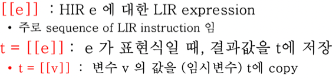
- 기호
[[ ]]를LIR = [[HIR]]로 정의한다 - 이때,
[[ ]]안에는 C언어같은 고급언어 표현식이 들어가고 그의 결과로 LIR이 나오는 연산자인 것 - 위 그림에서 보이는 것처럼
t = [[variable]]은 변수의 값을 주소공간 t에 넣으라는 의미가 된다
Expressions
Binary Operation
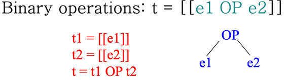
e = e1 OP e2에 대해t = [[e]]는t = [[e1 OP e2]]가 되고 이것은 곧
t1 = [[e1]]
t2 = [[e2]]
t = t1 OP t2
- 의 형태로 재귀적으로 연산된다는 것
Unary Operation
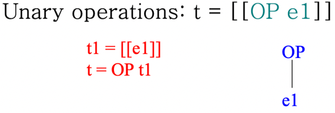
- 마찬가지다
- e1의 값이
[[ ]]를 통해 재귀적으로 구해지고, 그것을 OP로 연산하게 됨
Array Access
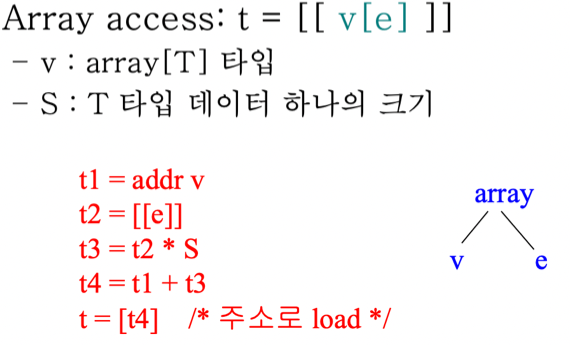
- v의 타입이 T이고 T 타입이 차지하는 메모리 크기(sizeof T)를 S라고 할때
- 일단 v의 시작주소를 구해주고
- C언어에서는 v가 곧 시작주소를 의미하지만 다른언어는 그렇지 않으니까
- e의 값은
[[ ]]로 재귀적으로 구해주고 - 재귀적으로 구해준 e에 S를 곱해 offset을 구하고
- 시작주소와 offset을 더해 원하는 주소를 구해준 뒤
- 결과값을 담을 주소인 t에 load해주면 끝
[]연산은 C언어에서 dereference와 같다 -*임t = *t4인 셈인거지- 여기서 주의할 점은 우리 수업에서 t~ 는 임시 공간을 의미하는 것이고 이것이 주소인지 그냥 값인지는 문맥으로 파악해야 된다
- 위의 예시에서 t4는 주소값이기 때문에 해당 주소에 있는 값을 t에 저장하게 되는 것
Structure Access
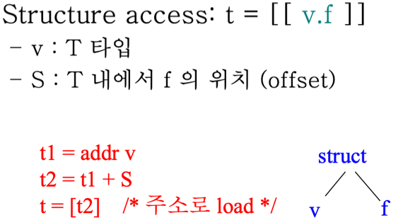
- 간단하다
- v의 시작주소를 구하고 structure 내에서 f의 위치(offset)인 S를 더해 load해주면 되는 것
Short-circuit OR
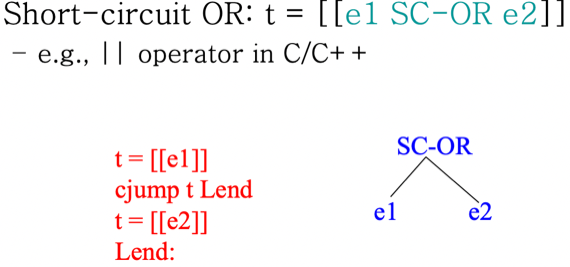
- Short-circuit OR 는 C언어의 || 연산을 의미하는 거다
- 즉, 앞부분이 참이면 뒷부분을 연산하지 않고 무조건 참을 반환하고 거짓이면 뒷부분의 값을 반환하는 구조
- 따라서 앞부분이 참이면 뒷부분이 실행되지 않기 때문에 조심해야된다더라
- 어쨋든 이걸 LIR로 바꿔보면
[[e1]]을 계산한다- e1 계산값이 참이면 Lend로 점프하고
- 거짓이라면
[[e2]]를 계산해 결과값으로 넣어준다
Short-circuit AND
- Short-circuit AND 도 C언어에서의
&&연산을 의미하는거임 - 앞부분이 거짓이면 뒤에를 연산하지 않고 결과는 무조건 거짓이고 앞부분이 참이면 뒷부분의 결과가 전체의 결과가 되는 셈
- 따라서
t = [[e1 SC-AND e2]]는 이정도로 번역될 수 있다
t = [[e1]]
t1 = NEG t
cjump t1 Lend
t = [[e2]]
Lend:
Statement
- 프언개에서 배운것처럼
- 결과로 값이 나오는 것을 Expression이라고 하고
- 결과로 상태가 바뀌는 것(변수의 값이 바뀐다던가)을 Statement라고 한다
Statement Sequence
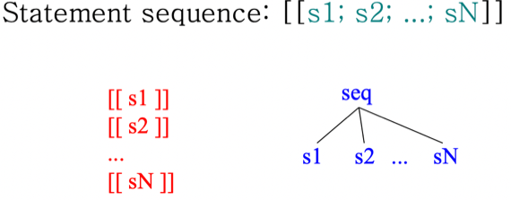
- 단순하게 이어주면 됨
Assignment
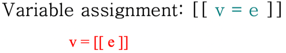
- 걍 변수에 값을 넣는 것은 당연하게도 위처럼 된다
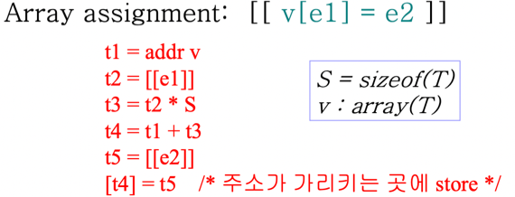
- 배열에 값을 넣는 것은
- 위 그림에서 t4까지가 적재될 주소를 찾는 과정이고
t5 = [[e2]]로 e2값을 구해서 저장한 뒤[t4] = t5로 t4의 위치에 넣게 되는 것
If then else
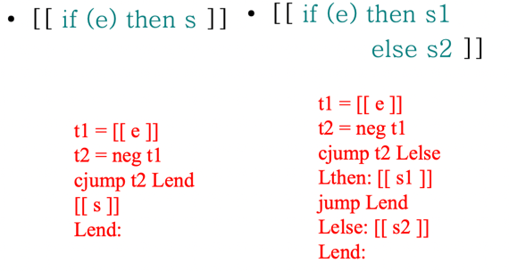
- 보면 이해되긴할건데
- 이 트릭은 좀 기억해둘 것 - e의 결과를 반대로 해서 e가 참일때는 cjump를 안하고 e가 거짓일때 cjump를 해서 s의 계산을 건너뛰게 된다는 것
- if-then-else의 경우에도 e가 참일때는 cjump를 안하고 Lthen이 실행된 후 Lend로 점프하고 e가 거짓일때만 Lelse로 cjump를 하게 된다
While
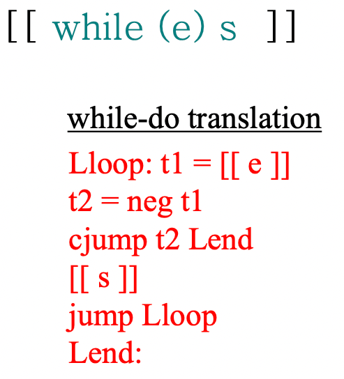
- 이것도 간단하다
- 여기서도 결과뒤집기 트릭을 이용한다
- e를 계산하여 거짓이면 뒤집어 참이 되므로 cjump에 걸러 Lend로 가고
- e가 참이면 뒤집어 거짓이 되므로 cjump에 걸리지 않아 연산이 됨
- 그리고 s를 계산한 후 jump를 이용해 다시 e를 계산하는 것으로 되돌아오는 식
Switch
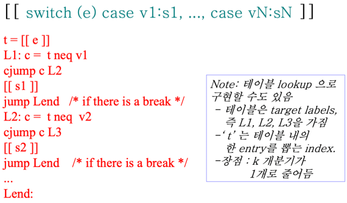
- switch문도 비슷하게
- neq 를 이용해서 같지 않으면 cjump로 다음 것으로 넘어가고 같다면 cjump에 걸리지 않고 아래 문장이 실행되는 구조
- 근데 switch문은 Table lookup을 이용해서 구현되기도 한댄다
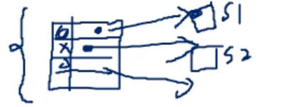
- 얘처럼 Hash Table이 있고 값과 주소가 저장되어있어 매칭되는 값의 주소로 바로 jump하게 되는 구조
- O(1)이어서 좋긴 하나 보안에 취약하고 컴파일러가 최적화하기 어렵다는 일장일단이 있다
Function call & return
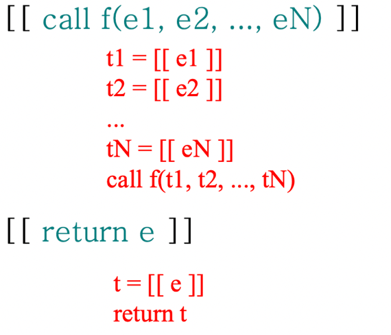
- 보면 쉬운데
- 이건 왜냐하면 call이랑 return이라는 keyword가 있다고 가정하기 때문인 것 - call이랑 return이 구체적으로 어떻게 더 low하게 번역되는지는 나중에 배움
Statement Expression
- 이건 말그대로 상태도 바뀌고 결과값도 반환되는 것이다
- Block statement, If-then-else statement, Assignment statement이 세개에 대해서 Expression화 시킬 수 있다더라
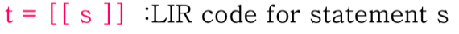
- 결과적으로 위처럼 s의 결과가 t에 담기게 됨
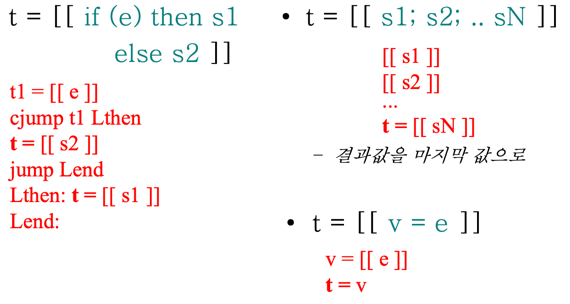
- 읽어보면 바로 알 수 있다
- 이전에는
[[s]]로 statement를 계산만 했다면, 이제는 그걸 변수 t에 저장 - 위의 예시에서 봐야될게
- 이전에는 if-then-else 할때 e를 neg로 뒤집어서 거짓일때 cjump에 걸리게 했는데 이번에는 neg를 안써서 참일때 cjump에 걸리게 했다는 차이점이 있다
- 이건 Statement expression이라서 이렇게 번역했다기보다는 이렇게 했을때 Instruction 갯수가 하나 줄어드니까 이렇게도 한다는 것을 그냥 보여주기 위한거인듯
Nested Expression / Statement
- 말그대로 중첩된 Expression을 말한다 - 시험에서 정답을 쓸 때는
[[ ]]기호가 있으면 안되고 그걸 다 3-Addr-Code로 바꿔야 함
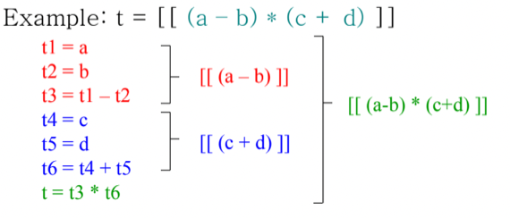
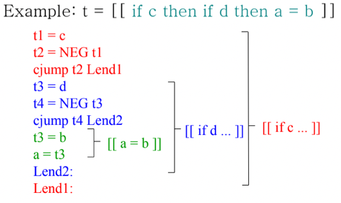
- 뭐 별 다른 개념은 없고
- 팁은 전체적인 큰 구조를 먼저 잡고 분할정복하는게 편하다 - AST에서 제일 최상단에 들어갈만한 놈이 뭔지를 찾고 그 아래의 Subtree를 재귀적으로 찾아가며 더이상 쪼갤 수 없으면 그때 3-Addr-Code로 바꿔보라
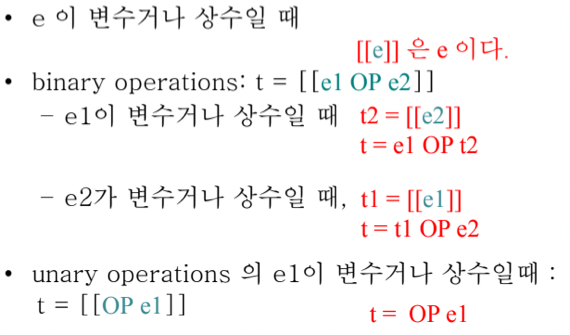
- 얘네는 이제 변수나 상수를 처리할때 팁 이다
- 읽어보면 당연한건데 변수나 상수를 무분별하게 꺼내면 실수할 수 있기 때문에 위와 같은 경우만 변수나 상수를 바로 꺼내는 것으로 연습을 하랜다
Storage Management
- 일단 뭐 일겠지만 프로세스의 저장공간에는 Register와 Memory가 있다
- Register빠르지만 용량이 작고 간접접근(주소이용해서 접근)할 수 없고
- Memory는 느리지만 용량이 크고 간접접근(주소 이용해서 접근)할 수가 있다
- 변수를 메모리에 둘 것인지 레지스터에 둘 것인지를 1차적으로 중간언어 생성에서 하게 된댄다
- 방법으로는 All Memory Approach하고 Standard Approach가 있는데
- All Memory Approach : 모든 변수를 Memory에 넣고 Register로 올려도 되겠다 싶은것만 올림
- Standard Approach : All Memory Approach에서 레지스터로 올리는 것을 좀 규칙화하면 좋겠다고 해서 나온 것
- 일단 global, static은 모두 메모리에 들어가고 주소를 이용한 연산이 필요한 변수(구조체나 배열, 혹은 Scalar(일반 변수) 중에서도 주소참조 연산이 있는 경우)도 메모리에 들어감
- 그리고 나머지 - 주소참조 연산이 없는 Scalar은 Virtual Register에 들어간다
- 여기서 Virtual Register라는 것은 Register는 원래 수량이 한정되어 있고 그 수량은 아키택처에 따라 다르지만 일단 지금은 이런 제한사항을 무시하고 Register가 무한하게 있다고 생각하는 것
Memory Organization
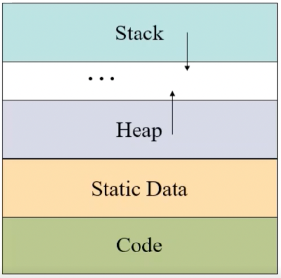
- Code는 프로그램의 코드가 저장되는 공간 - readonly면 더 빠르댄다
- Static Data는 Global이나 Static같은 프로그램의 라이프타임과 수명을 같이하는 변수들이 담기는 공간
- Stack은 Block Scope가 담기는 공간 - 지역변수들과 함수들이 들어감 - 알다시피 함수가 호출되면 스택에 push되고 리턴되면 pop되는 형식
- 여기서 중요한점은 위 그림에서 아래쪽이 주소값이 작고 위쪽이 주소값이 크다 - 스택탑의 주소가 줄어드는 것이 스택이 늘어나는 거고 주소가 커지는 방향이 스택이 줄어드는거다
- Heap은 new나 Malloc처럼 동적으로 메모리를 할당받았을때 저장되는 공간
- 그리고 뭐 알다시피 스택과 힙이 마주보는 방향으로 되어 있어서 최대크기를 벗어나지 않고 그 안에서 둘이 융통성있게 공간을 땅따먹기하게 된다
- 또한 Heap의 영역은 Malloc을 했을때 OS로부터 할당받게 된다 - 컴파일러 마음대로 줄 수 있는게 아니다 이거야
- 뭐 알다시피 Malloc과 Free를 항상 짝으로 사용해야 하고 그렇지 않으면 예상치못한 오류가 남 - Garbage Collection을 지원하는 언어를 사용하면 이런것을 방지할 수 있더라
- Code와 Static Data는 컴파일러에 의해 크기가 결정되고 Stack과 Heap은 프로세스가 진행됨에 따라 크기가 변동되더라
- 참고 - 윈도우에는 Windows PE라는 프로그램 포맷이 있고 리눅스에는 ELF라는 프로그램 포맷이 있는데 여기서 Windows PE에는 Mappable Sections에, ELF에는 .text와 .data에 Code하고 Static data가 들어가 된댄다
- 그리고 또 알아야 할 것이 이러한 일련의 구조를 정하는 것이 OS가 하는게 아니고 컴파일러가 하는것이다 - OS가 하는 것은 Heap의 공간을 요청했을 때 공간을 할당해주는 것 정도 - 따라서 컴파일을 할때 이러한 구조를 만들고 스택을 늘리고 줄이는 것에 대한 코드를 같이 생성해야 됨 - 뒤에 배운다
Environment, Binding
- 기억나는지는 모르겠는데
- <변수이름-변수의 주소> 들의 집합을 Environment라고 하고 - 변수의 이름과 그 변수의 주소 간의 관계들이 저장되는 저장소라고 생각
- <변수이름-변수의 값> 들의 집합을 State라고 한다 - 변수의 이름과 그 변수에 담긴 값 간의 관계들이 저장되는 저장소
- 그리고 Binding이라는 것은 Environment혹은 State의 원소를 추가한다는 의미를 가질 수 있는데 우리 수업에서는 좀 더 좁은 의미로 Environment에 원소를 추가하는 것을 Binding이라고 함
- 즉, 어떤 변수와 그 변수의 주소를 매핑시키는 것을 Binding이라고 한다 이거지
Stack Management
용어정리
- Activation Record : 함수가 하나 Call되었을 때 마다 생성되는 하나의 단위. Local variable이 제일 많이 차지하고 Parameter나 Return value, 3-Addr-Code에서 많이 생성되는 임시변수들이 들어간다
- Run time stack : 프로세스가 실행되는 동안의 Activation record를 스택의 형태로 저장하는 공간
- 당연히 함수가 call되면 Run time stack에 Activation record가 push되고
- 함수가 return되면 Run time stack에서 Activation Record가 pop된다
- 그리고 Run time stack의 top에는 지금 실행동인 함수의 Activation record가 들어감
- Stack Pointer(SP) : Runtime stack의 top에 있는 Activation record의 top의 주소
- Frame Pointer(FP) : Runtime stack의 top에 있는 Activation record의 base(bottom)의 주소
- 보통 일반적으로 코딩할때는 스택의 top에 접근할때 걍 integer index등으로 접근했었는데
- 여기서는 Activation record들의 크기가 각기 다르기 때문에 이런식으로 index로는 접근할 수 없다
- 그래서 Activation Record의 시작주소과 끝주소를 가지고 하나의 스택 원소 위치를 알아내게 되는 것
- 이런식의 2포인터 접근을 하면 좋은점이 뭐냐면
- 어떤 변수의 주소는 절대주소가 아닌 상대주소를 쓰는데 이때의 기준점이 SP, FP임 - SP로 부터 얼만 떨어져 있는 놈, FP로부터 얼마 떨어져 있는 놈
- 따라서 해당 offset의 값이 항상 Activation record의 크기의 절반을 넘지 않기 때문에 더 작은 수를 이용해 주소를 표현하는 것이 가능하더라
- 그리고 당연히 SP의 값이 FP의 값보다 작음 - 주소값이 작을수록 더 Top이기 때문
ELF example
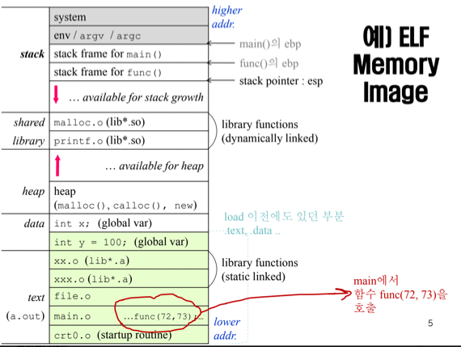
- ELF 포맷은 좀 알아두자
- 일단 연두색으로 된 부분이 디스크에 저장되는 부분이다 - 컴파일 후 a.out으로 생성되는 부분이 저부분임
- 보면 코드랑 초기화되어있는 글로벌변수 들이 디스크에 저장되어있음 - 초기화되어있지 않은 글로벌변수는 굳이 지금 안만들고 프로세스 생성시에 만들게 된다
- 그리고 흰색부분이 프로세스가 개시되면 추가적으로 할당받는 부분 이다 = 스택과 탑, 초기화하지 않은 글로벌변수 등이 메모리공간을 할당받게 됨
- ELF에서는 SP, FP라는 용어 대신 esp, ebp라는 용어를 사용함 - ebp에서 bp가 base pointer의 약자인것 생각하면 헷갈리지는 않을듯
- 따라서 만약 func가 실행되면 ebp는 esp였던 곳으로 이동하고 esp는 새로운 func의 top을 가리키게 됨
Runtime Stack의 작동과정
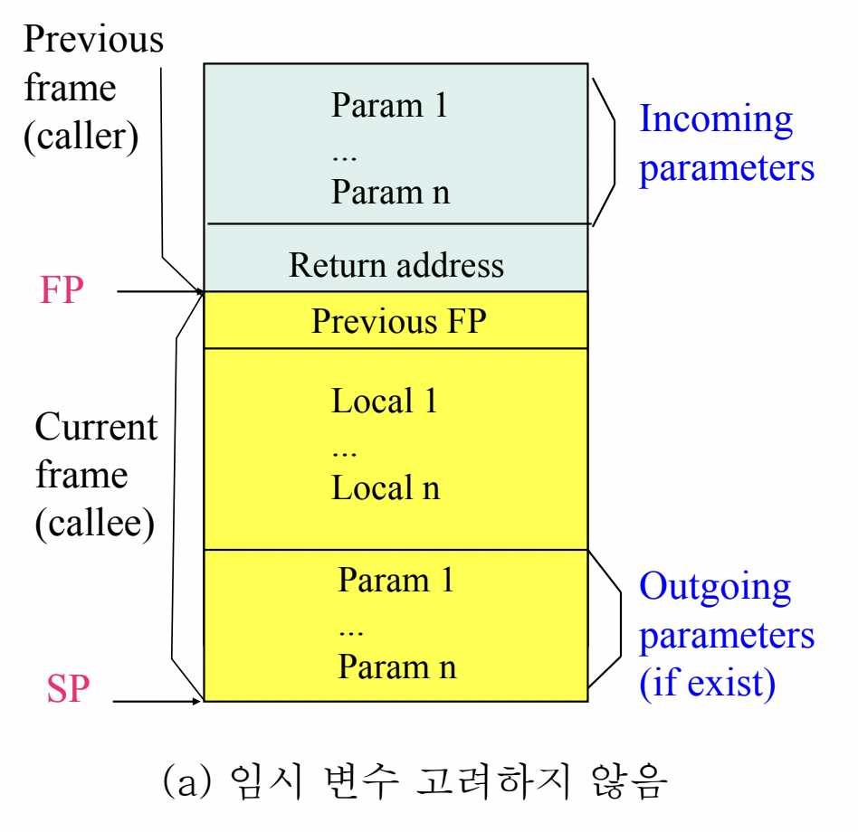
- 함수를 Call하는 과정
- Call할 함수의 parameter들을 전부 스택에 넣는다
- 함수가 return되면 돌아가야 할 Instruction의 주소를 넣어준다 - Return address
- 새로운 Activation Record를 위한 Stack Frame을 할당받고 - 이 할당받는다는 것이 결국에는 SP를 적절한 위치로 옮기는 것을 의미함
- 이전 FP의 값을 Stack frame에 제일 먼저 넣어주고 FP를 이전의 SP로 옮겨준다
- Callee함수의 지역변수들도 넣어주고 (만약에 새로운 함수를 Call했을 경우에) Parameter들도 넣어준다
- 함수를 Return하는 과정
- 현재의 FP로 SP를 옮겨준다
- Previous FP를 보고 거기로 FP를 옮겨준다
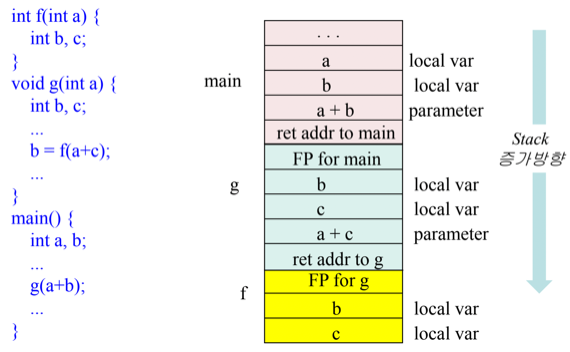
- 예시 여러번 연습할 것!
- main에서 g를 호출할때
- a + b를 넣고
- main에서 되돌아와야 할 instruction주소를 저장하고
- SP를 적당한 위치로 옮겨주고
- 이전의 FP를 넣고
- FP를 이전의 SP로 옮김
- g에서 f를 호출할 때도 마찬가지고
- 뭐 리턴될때도 위에서 말한것과 같은 과정이 일어남
함수 호출 코드 생성하기
- 이전에 함수를 호출할때는 call만 해서 되는게 아니고 더 추가적인 작업이 필요하다는 것과
- heap allocation만 OS가 해주고 나머지는 컴파일러가 알아서 해야되는 거라고 했었자네
- 저런 일들을 어떻게 할 것인지 설명함
함수 호출의 자세한 과정
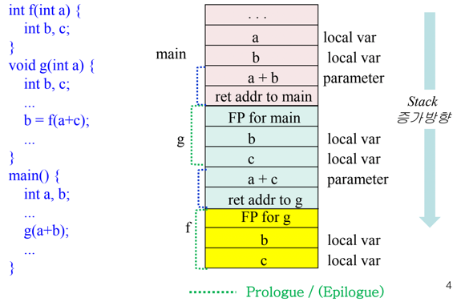
- 함수 호출 과정을 자세히 알아보자고
- Caller가 할일 : 함수 호출 전에는 parameter하고 return address를 스택에 넣고 Callee의 Instrunction으로 jump하는 코드를 생성함
- Callee가 할 일 : 함수 진입 직전에는 FP와 SP를 옮겨서 스택을 늘리고 이전의 FP와 함수에 사용되는 local variable들을 다 넣음 - 이부분을 Prologue라고 한다
- 그래서 위의 그림에서 초록색 부분이 Prologue에서 생성되는 값인 거임
- 함수 리턴 과정은
- Callee가 할 일 : 함수가 리턴되기 직전에는 리턴값을 적절한 위치에 넣고 SP와 FP를 조정하여 해당 frame을 pop하며 저장해놓았던 return instruction address로 jump하는 코드를 생성한다 - 이부분을 Epilogue라고 함
- Caller가 할 일 : 함수 리턴 직후에는 저장해놓았던 리턴값을 사용하는 코드를 생성함
- 그리고 참고로 함수 호출 전의 register값을 저장해놓아야 할 필요가 있는데 Caller가 보관하거나 Callee가 보관하거나 둘이 나눠서 보관하는 방법이 있댄다
- 이것도 참고로 알아두셈 - Nested function이 가능한 경우에는 outer function의 frame 위치를 inner function에 저장하게 되고 이걸 Static link 라고 한다. 근데 위처럼 Nested function이 아닌 외부의 함수를 호출하는 경우에는 그냥 이전 함수에서의 FP를 현재의 frame에 저장하고 이걸 Dinamic link 라고 부른댄다
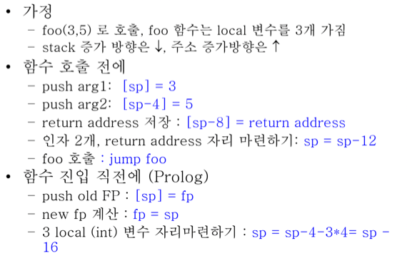
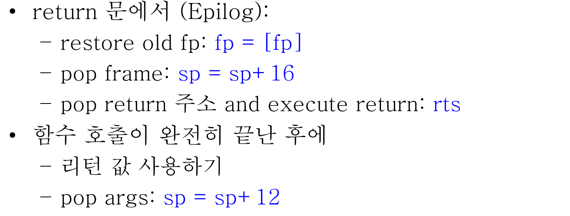
- 예제를 보자고
- 함수 호출 전에
- 첫번째 인자를 넣어주기 위해 sp가 가리키던 곳에 3을 넣어줌
[sp] = 3(C언어식으로 번역하면*sp = 3;이라고 생각하면 됨)
- 두번째 인자를 넣어주기 위해 첫번째 인자를 넣어준 곳 다음에 5를 넣어줌
[sp - 4] = 5(즉,*(sp - 4) = 4;)
- Return address를 저장
[sp - 8] = return address(즉,*(sp - 8) = retAddress;)
- 인자 두개와 리턴주소가 들어왔으니까 sp를 top으로 재조정해줌 - 4바이트 값 3개가 들어왔으니가 12바이트 아래로 내려가면 되것지
sp = sp - 12(즉,sp -= 12;)
- 첫번째 인자를 넣어주기 위해 sp가 가리키던 곳에 3을 넣어줌
- 그리고 프롤로그 실행
- 일단 이전의 fp를 먼저 넣어줌 - sp가 가르키는 위치에 넣으면 되겠지
[sp] = fp(즉,*sp = fp;)
- fp를 sp위치까지 내림
fp = sp(즉,fp = sp;)
- 새로운 sp 설정 - 일단 이전의 fp저장한다고 4바이트 사용했고 위의 예제에서는 Local variable이 3개랬으니까 3 * 4 해서 12바이트 더 사용함 = 16바이트 더 내리면 된다
sp = sp - 16(즉,sp -= 16;)
- 일단 이전의 fp를 먼저 넣어줌 - sp가 가르키는 위치에 넣으면 되겠지
- return할 때 에필로그
- fp값을 프롤로그에서 저장해놓았던 값으로 복원시킨다
fp = [fp](즉,fp = *fp;)
- sp를 다시 올려서 Stack에서 pop한다
sp = sp + 16(즉,sp += 16;)
- fp값을 프롤로그에서 저장해놓았던 값으로 복원시킨다
- 함수 호출이 끝난 후
- 일단 어딘가에 저장해놨던 리턴값을 사용하고
- 함수 호출때문에 늘렸던 공간을 다시 복원해준다 - 아까 인자 두개랑 리턴주소 저장하느라 12바이트 늘려놨으니까 다시 복원
sp = sp + 12(즉,sp += 12;)
변수 사용하기
- FP가 이전의 프레임과 현재의 프레임의 경계에 있기 때문에 양쪽의 값을 다 접근하기에 용이하다
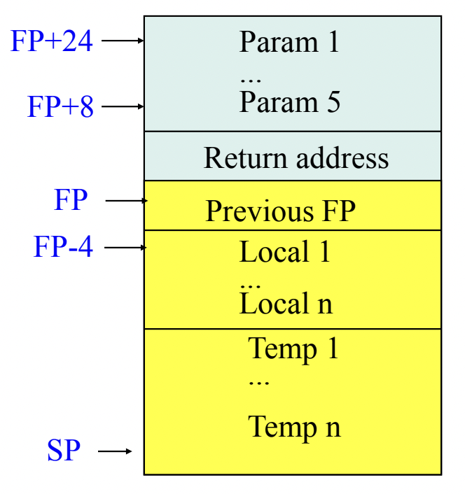
- 그래서 FP + n으로 이전의 프레임에 접근해 인자값들을 사용하고 FP - n으로 현재의 프레임에 접근해 지역변수값들을 사용한다
함수 호출 코드 생성
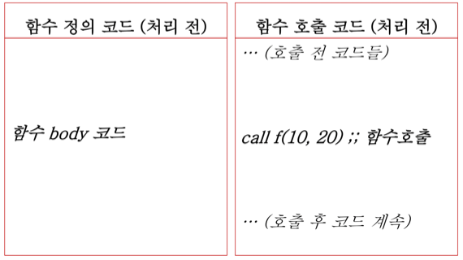
- 이게 함수 호출 코드 생성 전 모습임
- 왼쪽이 Callee이고 오른쪽이 Caller
- 그래서 오른쪽에서 call f(10, 20)을 하면 왼쪽으로 딱 넘어갔다가 돌아오고싶다 이거야
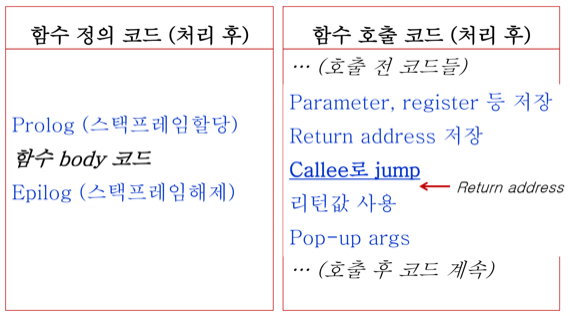
- 그래서 이런식으로 코드들이 추가된다
- 읽어보면 위에서 했던 내용 그대로임
- Parameter, register저장하고
- Return address 저장하고 - 이때 return address는 jump한 직후의 instruction 주소임
- Callee로 jump하고
- Prologue수행해서 이전 FP저장하고 새로 FP, SP옮기고 지역변수 넣어주고
- 함수 실행하고
- Epilogue수행해서 리턴값 저장하고 FP, SP다시 롤백시키고 저장해놨던 return address로 jump
- 리턴값 사용하고
- SP조정해서 저장해놨던 parameter랑 register 다 달려버리기